Building Models from scratch¶
Applying various MF and Deep learning recommender models on movielens 100k.
Imports¶
%tensorflow_version 1.x
TensorFlow 1.x selected.
import math
import numpy as np
import pandas as pd
from pylab import *
import matplotlib
import matplotlib.pyplot as plt
from sklearn.model_selection import train_test_split
from sklearn.metrics import mean_absolute_error, mean_squared_error
import tensorflow as tf
%matplotlib inline
Data utils¶
def load_data(file_dir):
# output:
# N: the number of user;
# M: the number of item
# data: the list of rating information
user_ids_dict, rated_item_ids_dict = {},{}
N, M, u_idx, i_idx = 0,0,0,0
data = []
f = open(file_dir)
for line in f.readlines():
if '::' in line:
u, i, r, _ = line.split('::')
else:
u, i, r, _ = line.split()
if int(u) not in user_ids_dict:
user_ids_dict[int(u)]=u_idx
u_idx+=1
if int(i) not in rated_item_ids_dict:
rated_item_ids_dict[int(i)]=i_idx
i_idx+=1
data.append([user_ids_dict[int(u)],rated_item_ids_dict[int(i)],float(r)])
f.close()
N = u_idx
M = i_idx
return N, M, data, rated_item_ids_dict
def sequence2mat(sequence, N, M):
# input:
# sequence: the list of rating information
# N: row number, i.e. the number of users
# M: column number, i.e. the number of items
# output:
# mat: user-item rating matrix
records_array = np.array(sequence)
mat = np.zeros([N,M])
row = records_array[:,0].astype(int)
col = records_array[:,1].astype(int)
values = records_array[:,2].astype(np.float32)
mat[row,col]=values
return mat
Data download¶
!wget http://files.grouplens.org/datasets/movielens/ml-100k.zip
!unzip ml-100k.zip
Data loading¶
data_col = ['user_id','item_id','rating','timestamp']
item_col = ['movie_id','movie_title','release_date','video_release_date','IMDb_URL','unknown','Action',
'Adventure','Animation',"Children's",'Comedy','Crime','Documentary','Drama','Fantasy',
'Film-Noir','Horror','Musical','Mystery','Romance','Sci-Fi','Thriller','War','Western']
data_dir = 'ml-100k/u.data'
data = pd.read_table(data_dir,header=None, names=data_col, parse_dates=['timestamp'])
item_dir = 'ml-100k/u.item'
item = pd.read_table(item_dir, header=None, names=item_col, parse_dates=['release_date','video_release_date'], encoding='ISO-8859-1', sep='|')
item.head()
| movie_id | movie_title | release_date | video_release_date | IMDb_URL | unknown | Action | Adventure | Animation | Children's | Comedy | Crime | Documentary | Drama | Fantasy | Film-Noir | Horror | Musical | Mystery | Romance | Sci-Fi | Thriller | War | Western | |
|---|---|---|---|---|---|---|---|---|---|---|---|---|---|---|---|---|---|---|---|---|---|---|---|---|
| 0 | 1 | Toy Story (1995) | 1995-01-01 | NaT | http://us.imdb.com/M/title-exact?Toy%20Story%2... | 0 | 0 | 0 | 1 | 1 | 1 | 0 | 0 | 0 | 0 | 0 | 0 | 0 | 0 | 0 | 0 | 0 | 0 | 0 |
| 1 | 2 | GoldenEye (1995) | 1995-01-01 | NaT | http://us.imdb.com/M/title-exact?GoldenEye%20(... | 0 | 1 | 1 | 0 | 0 | 0 | 0 | 0 | 0 | 0 | 0 | 0 | 0 | 0 | 0 | 0 | 1 | 0 | 0 |
| 2 | 3 | Four Rooms (1995) | 1995-01-01 | NaT | http://us.imdb.com/M/title-exact?Four%20Rooms%... | 0 | 0 | 0 | 0 | 0 | 0 | 0 | 0 | 0 | 0 | 0 | 0 | 0 | 0 | 0 | 0 | 1 | 0 | 0 |
| 3 | 4 | Get Shorty (1995) | 1995-01-01 | NaT | http://us.imdb.com/M/title-exact?Get%20Shorty%... | 0 | 1 | 0 | 0 | 0 | 1 | 0 | 0 | 1 | 0 | 0 | 0 | 0 | 0 | 0 | 0 | 0 | 0 | 0 |
| 4 | 5 | Copycat (1995) | 1995-01-01 | NaT | http://us.imdb.com/M/title-exact?Copycat%20(1995) | 0 | 0 | 0 | 0 | 0 | 0 | 1 | 0 | 1 | 0 | 0 | 0 | 0 | 0 | 0 | 0 | 1 | 0 | 0 |
data.head()
| user_id | item_id | rating | timestamp | |
|---|---|---|---|---|
| 0 | 196 | 242 | 3 | 881250949 |
| 1 | 186 | 302 | 3 | 891717742 |
| 2 | 22 | 377 | 1 | 878887116 |
| 3 | 244 | 51 | 2 | 880606923 |
| 4 | 166 | 346 | 1 | 886397596 |
data_dir = 'ml-100k/u.data'
N, M, data_list, _ = load_data(file_dir=data_dir)
print(' data length: %d \n user number: %d \n item number: %d' %(len(data_list),N,M))
data length: 100000
user number: 943
item number: 1682
Train test split¶
train_list, test_list = train_test_split(data_list,test_size=0.2)
print ('train length: %d \n test length: %d' %(len(train_list),len(test_list)))
train length: 80000
test length: 20000
train_mat = sequence2mat(sequence = train_list, N = N, M = M)
test_mat = sequence2mat(sequence = test_list, N = N, M = M)
train_mat[0,:100]
array([3., 0., 0., 0., 0., 0., 0., 0., 0., 0., 2., 0., 0., 0., 0., 0., 0.,
0., 0., 0., 0., 0., 0., 0., 0., 0., 0., 0., 0., 0., 0., 0., 0., 0.,
0., 0., 0., 0., 0., 0., 0., 0., 0., 0., 0., 0., 0., 0., 0., 0., 0.,
0., 0., 0., 0., 0., 0., 0., 0., 0., 0., 0., 0., 0., 0., 0., 0., 0.,
0., 0., 0., 0., 0., 0., 0., 0., 0., 0., 0., 0., 0., 0., 0., 4., 0.,
0., 4., 0., 0., 0., 0., 0., 4., 0., 0., 0., 0., 0., 0., 0.])
Evaluation policy¶
def get_topn(r_pred, train_mat, n=10):
unrated_items = r_pred * (train_mat==0)
idx = np.argsort(-unrated_items)
return idx[:,:n]
def recall_precision(topn, test_mat):
n,m = test_mat.shape
hits,total_pred,total_true = 0.,0.,0.
for u in range(n):
hits += len([i for i in topn[u,:] if test_mat[u,i]>0])
size_pred = len(topn[u,:])
size_true = np.sum(test_mat[u,:]>0,axis=0)
total_pred += size_pred
total_true += size_true
recall = hits/total_true
precision = hits/total_pred
return recall, precision
def mae_rmse(r_pred, test_mat):
y_pred = r_pred[test_mat>0]
y_true = test_mat[test_mat>0]
mae = mean_absolute_error(y_true, y_pred)
rmse = np.sqrt(mean_squared_error(y_true, y_pred))
return mae, rmse
def evaluation(pred_mat, train_mat, test_mat):
topn = get_topn(pred_mat, train_mat, n=10)
mae, rmse = mae_rmse(pred_mat, test_mat)
recall, precision = recall_precision(topn, test_mat)
return mae, rmse, recall, precision
def get_hit(ranklist,rated_item):
result = 0
for item in ranklist:
if item==rated_item:
result = 1
return result
def get_ndcg(ranklist,rated_item):
result = 0
for i in range(len(ranklist)):
item = ranklist[i]
if item==rated_item:
result = math.log(2)/math.log(i+2)
return result
def hit_ndcg(test_sequence, ranklist):
length = len(test_sequence)
hits,ndcgs=[],[]
for idx in range(length):
user = test_sequence[idx,0].astype(np.int32)
rated_item = test_sequence[idx,1].astype(np.int32)
hr = get_hit(ranklist[user],rated_item)
ndcg = get_ndcg(ranklist[user],rated_item)
hits.append(hr)
ndcgs.append(ndcg)
#hr,ndcg = np.array(hits).mean(),np.array(ndcgs).mean()
return hits,ndcgs
def plot_figure(values_list, name=''):
fig=plt.figure(name)
x = range(len(values_list))
plot(x, values_list, color='g',linewidth=3)
plt.title(name + ' curve')
plt.xlabel('Iterations')
plt.ylabel(name)
show()
KNN¶

def calculate_similarity(a, b, model='pearson', minimum_common_items=5):
assert a.shape==b.shape
dim = len(a.shape) #向量维度
common_items = a*b>0 # 共同评分的项
common_size = np.sum(common_items,axis=dim-1)
if model=='pearson':
mean_a = np.sum(a,axis=dim-1)/np.sum(a>0,axis=dim-1)
mean_b = np.sum(b,axis=dim-1)/np.sum(b>0,axis=dim-1)
if dim ==1:
aa = (a - mean_a)*common_items
bb = (b - mean_b)*common_items
else:
aa = (a - np.reshape(mean_a, (-1,1)))*common_items
bb = (b - np.reshape(mean_b, (-1,1)))*common_items
else: #consine
mean_u = np.sum(b,axis=0)/np.sum(b>0,axis=0)
aa = (a - mean_u)*common_items
bb = (b - mean_u)*common_items
sim = np.sum(aa*bb, axis=dim-1)/(np.sqrt(np.sum(aa**2, axis=dim-1))*np.sqrt(np.sum(bb**2, axis=dim-1)) + 1e-10)
least_common_items = common_size>minimum_common_items
return sim*least_common_items
def similarity_matrix(mat, model='pearson', minimum_common_items=5):
n,m = mat.shape
sim_list=[]
for u in range(n):
a = np.tile(mat[u,:], (n,1))
b = mat
if model=='pearson':
sim = calculate_similarity(a, b, model='pearson', minimum_common_items=minimum_common_items)
else: # consine
sim = calculate_similarity(a, b, model='consine', minimum_common_items=minimum_common_items)
sim_list.append(sim)
if u % 100 ==0:
print(u)
return np.array(sim_list)
sim_mat = similarity_matrix(mat=train_mat, model='pearson')
neighbors = np.argsort(-np.array(sim_mat))
sim_sort = -1*np.sort(-np.array(sim_mat))
0
100
200
300
400
500
600
700
800
900
np.set_printoptions(precision=4, suppress=True)
print('user 0:')
print('neighbors:') # 用户0的近邻
print(neighbors[0,:10])
print('sim:\n') # 用户0 的近邻相似度
print(sim_sort[0,:10])
print('similarity_mat:') # 用户之间的相似度矩阵
print(sim_mat[:6,:6])
user 0:
neighbors:
[ 0 768 542 23 842 340 626 140 501 311]
sim:
[1. 0.8819 0.8712 0.7861 0.7826 0.7512 0.7492 0.7405 0.739 0.6876]
similarity_mat:
[[ 1. 0. 0.5462 0.3105 0. -0. ]
[ 0. 1. -0.0122 -0.1385 0. -0.2046]
[ 0.5462 -0.0122 1. 0.1852 0. 0.306 ]
[ 0.3105 -0.1385 0.1852 1. 0. 0.0444]
[ 0. 0. 0. 0. 1. 0. ]
[-0. -0.2046 0.306 0.0444 0. 1. ]]
def get_K(sim_mat, min_similarity=0.5):
num = np.sum(sim_mat[:,1:]>min_similarity, axis=1)
plt.rcParams['font.sans-serif'] = [u'SimHei']
plt.rcParams['axes.unicode_minus'] = False
plt.hist(num, bins=40, facecolor="blue", edgecolor="black", alpha=0.7)
plt.show()
num_sort = np.sort(-num)
line = int(0.8*len(sim_mat))
K = -1*num_sort[line]
return K
min_similarity=0.8
K = get_K(sim_mat, min_similarity=min_similarity)
print('min_similarity:',min_similarity,'K:',K)
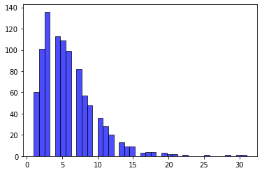
min_similarity: 0.8 K: 3
min_similarity=0.5
K = get_K(sim_mat, min_similarity=min_similarity)
print('min_similarity:',min_similarity,'K:',K)
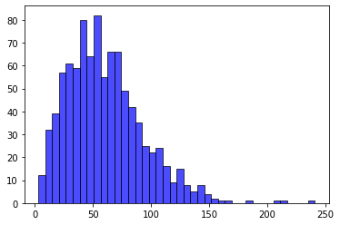
min_similarity: 0.5 K: 32
def prediction(train_mat, sim_mat, K=1, model='user_based'):
assert len(train_mat.shape)>1
n,m = train_mat.shape
if model=='user_based':
sim_sort = -1*np.sort(-np.array(sim_mat))[:,1:K+1] # 除去最相似的自己
neighbors = np.argsort(-np.array(sim_mat))[:,1:K+1]
common_items = train_mat[neighbors]>0
mean_user = np.reshape(np.sum(train_mat,axis=1)/np.sum(train_mat>0,axis=1), (-1,1))
mat_m = train_mat - mean_user
aa = np.sum(sim_sort[:,:,np.newaxis]*mat_m[neighbors]*common_items,axis=1)
bb = np.sum(sim_sort[:,:,np.newaxis]*common_items,axis=1)+1e-10 # 1e-10保证分母不为０
r_pred = mean_user + aa/bb
return r_pred
else: # 'item_based'
r_pred=[]
for u in range(n):
u_mat = np.tile(train_mat[u],(m,1)) # m份用户u的记录,m*m
rated_items_sim = (u_mat>0)*sim_mat # 保留有评分记录的相似度 m*m
sim_sort = -1*np.sort(-np.array(rated_items_sim))[:,:K] # m*K
neighbors = np.argsort(-np.array(rated_items_sim))[:,:K] # m*K
neighbor_ratings = np.array([u_mat[i,neighbors[i]] for i in range(m)])# m*K
aa = np.sum(sim_sort*neighbor_ratings,axis=1) # m*1
bb = np.sum(sim_sort,axis=1)+1e-10 # 1e-10保证分母不为０ m*1
r_pred.append(aa/bb)
return np.array(r_pred)
r_pred = prediction(train_mat=train_mat, sim_mat=sim_mat, K=K, model='user_based')
n = 10
topn = get_topn(r_pred=r_pred, train_mat=train_mat, n=n)
print('user 0:')
print('top-n list:',topn[0])
user 0:
top-n list: [ 346 1453 983 1562 1135 1455 5 482 593 271]
mae, rmse = mae_rmse(r_pred=r_pred, test_mat=test_mat)
print('mae:%.4f; rmse:%.4f'%(mae,rmse))
recall, precision = recall_precision(topn=topn, test_mat=test_mat)
print('recall:%.4f; precision:%.4f'%(recall,precision))
mae:0.8495; rmse:1.0855
recall:0.0118; precision:0.0251
sim_mat = similarity_matrix(mat=train_mat.T, model='consine', minimum_common_items=3)
neighbors = np.argsort(-np.array(sim_mat))
sim_sort = -1*np.sort(-np.array(sim_mat))
0
100
200
300
400
500
600
700
800
900
1000
1100
1200
1300
1400
1500
1600
min_similarity = 0.5
K = get_K(sim_mat, min_similarity=min_similarity)
print('min_similarity:',min_similarity,'K:',K)
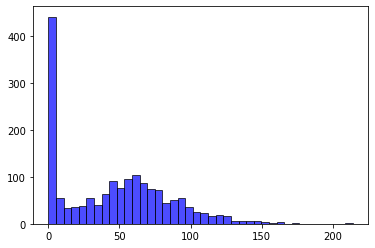
min_similarity: 0.5 K: 1
r_pred = prediction(train_mat=train_mat, sim_mat=sim_mat, K=5, model='item_based')
n = 10
topn = get_topn(r_pred=r_pred, train_mat=train_mat, n=n)
mae, rmse = mae_rmse(r_pred=r_pred, test_mat=test_mat)
print('mae:%.4f; rmse:%.4f'%(mae,rmse))
recall, precision = recall_precision(topn=topn, test_mat=test_mat)
print('recall:%.4f; precision:%.4f'%(recall,precision))
mae:0.8235; rmse:1.0665
recall:0.0080; precision:0.0171
MF¶

class mf():
def __init__(self,
train_list, # train_list: train data
test_list, # test_list: test data
N, # N:the number of user
M, # M:the number of item
K=10, # K: the number of latent factor
learning_rate=0.001, # learning_rate: the learning rata
lamda_regularizer=0.1, # lamda_regularizer: regularization parameters
max_iteration=50 # max_iteration: the max iteration
):
self.train_list = train_list
self.test_list = test_list
self.N = N
self.M = M
self.K = K
self.learning_rate = learning_rate
self.lamda_regularizer = lamda_regularizer
self.max_iteration = max_iteration
def train(self):
P = np.random.normal(0, 0.1, (self.N, self.K))
Q = np.random.normal(0, 0.1, (self.M, self.K))
train_mat = sequence2mat(sequence = self.train_list, N = self.N, M = self.M)
test_mat = sequence2mat(sequence = self.test_list, N = self.N, M = self.M)
records_list = []
for step in range(self.max_iteration):
los=0.0
for data in self.train_list:
u,i,r = data
P[u],Q[i],ls = self.update(P[u], Q[i], r=r,
learning_rate=self.learning_rate,
lamda_regularizer=self.lamda_regularizer)
los += ls
pred_mat = self.prediction(P,Q)
mae, rmse, recall, precision = evaluation(pred_mat, train_mat, test_mat)
records_list.append(np.array([los, mae, rmse, recall, precision]))
if step % 10 ==0:
print(' step:%d \n loss:%.4f,mae:%.4f,rmse:%.4f,recall:%.4f,precision:%.4f'
%(step,los,mae,rmse,recall,precision))
print(' end. \n loss:%.4f,mae:%.4f,rmse:%.4f,recall:%.4f,precision:%.4f'
%(records_list[-1][0],records_list[-1][1],records_list[-1][2],records_list[-1][3],records_list[-1][4]))
return P, Q, np.array(records_list)
def update(self, p, q, r, learning_rate=0.001, lamda_regularizer=0.1):
error = r - np.dot(p, q.T)
p = p + learning_rate*(error*q - lamda_regularizer*p)
q = q + learning_rate*(error*p - lamda_regularizer*q)
loss = 0.5 * (error**2 + lamda_regularizer*(np.square(p).sum() + np.square(q).sum()))
return p, q, loss
def prediction(self, P, Q):
N,K = P.shape
M,K = Q.shape
rating_list=[]
for u in range(N):
u_rating = np.sum(P[u,:]*Q, axis=1)
rating_list.append(u_rating)
r_pred = np.array(rating_list)
return r_pred
model = mf(train_list=train_list,
test_list=test_list,
N=N,
M=M,
K=K,
learning_rate=learning_rate,
lamda_regularizer=lamda_regularizer,
max_iteration=max_iteration)
P, Q, records_array = model.train()
print('MAE:%.4f;RMSE:%.4f;Recall:%.4f;Precision:%.4f'
%(records_array[:,1][-1],records_array[:,2][-1],records_array[:,3][-1],records_array[:,4][-1]))
step:0
loss:549449.5639,mae:3.5169,rmse:3.6918,recall:0.0162,precision:0.0344
step:10
loss:65630.3526,mae:0.7811,rmse:0.9929,recall:0.0333,precision:0.0706
step:20
loss:63095.0387,mae:0.7615,rmse:0.9634,recall:0.0308,precision:0.0653
step:30
loss:61813.1467,mae:0.7488,rmse:0.9466,recall:0.0331,precision:0.0701
step:40
loss:60758.6475,mae:0.7382,rmse:0.9333,recall:0.0342,precision:0.0725
step:50
loss:59985.8868,mae:0.7318,rmse:0.9256,recall:0.0341,precision:0.0723
step:60
loss:59411.9142,mae:0.7281,rmse:0.9212,recall:0.0346,precision:0.0734
step:70
loss:58989.6100,mae:0.7261,rmse:0.9190,recall:0.0323,precision:0.0684
step:80
loss:58678.2983,mae:0.7252,rmse:0.9180,recall:0.0300,precision:0.0636
step:90
loss:58446.1711,mae:0.7248,rmse:0.9178,recall:0.0287,precision:0.0609
end.
loss:58285.9034,mae:0.7248,rmse:0.9180,recall:0.0279,precision:0.0592
MAE:0.7248;RMSE:0.9180;Recall:0.0279;Precision:0.0592
plot_figure(values_list=records_array[:,0],name='loss')
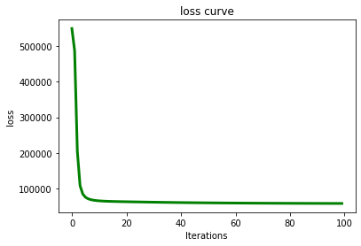
plot_figure(values_list=records_array[:,1],name='MAE')
NMF¶

class nmf_sgd():
def __init__(self,
train_list, # train_list: train data
test_list, # test_list: test data
N, # N:the number of user
M, # M:the number of item
K=10, # K: the number of latent factor
learning_rate=0.001, # learning_rate: the learning rata
max_iteration=50 # max_iteration: the max iteration
):
self.train_list = train_list
self.test_list = test_list
self.N = N
self.M = M
self.K = K
self.learning_rate = learning_rate
self.max_iteration = max_iteration
def train(self):
P = np.random.normal(0, 0.1, (self.N, self.K))
Q = np.random.normal(0, 0.1, (self.M, self.K))
train_mat = sequence2mat(sequence = self.train_list, N = self.N, M = self.M)
test_mat = sequence2mat(sequence = self.test_list, N = self.N, M = self.M)
records_list = []
for step in range(self.max_iteration):
los=0.0
for data in self.train_list:
u,i,r = data
P[u],Q[i],ls = self.update(P[u], Q[i], r=r, learning_rate=self.learning_rate)
los += ls
pred_mat = self.prediction(P,Q)
mae, rmse, recall, precision = evaluation(pred_mat, train_mat, test_mat)
records_list.append(np.array([los, mae, rmse, recall, precision]))
if step % 10 ==0:
print(' step:%d \n loss:%.4f,mae:%.4f,rmse:%.4f,recall:%.4f,precision:%.4f'
%(step,los,mae,rmse,recall,precision))
print(' end. \n loss:%.4f,mae:%.4f,rmse:%.4f,recall:%.4f,precision:%.4f'
%(records_list[-1][0],records_list[-1][1],records_list[-1][2],records_list[-1][3],records_list[-1][4]))
return P,Q,np.array(records_list)
def update(self, p, q, r, learning_rate=0.001):
error = r - np.dot(p, q.T)
p = p + learning_rate*error*q
q = q + learning_rate*error*p
loss = 0.5 * error**2
return p, q, loss
def prediction(self, P, Q):
N,K = P.shape
M,K = Q.shape
rating_list=[]
for u in range(N):
u_rating = np.sum(P[u,:]*Q, axis=1)
rating_list.append(u_rating)
r_pred = np.array(rating_list)
return r_pred
class nmf_mult():
def __init__(self,
train_list, # train_list: train data
test_list, # test_list: test data
N, # N:the number of user
M, # M:the number of item
K=10, # K: the number of latent factor
max_iteration=50 # max_iteration: the max iteration
):
self.train_list = train_list
self.test_list = test_list
self.N = N
self.M = M
self.K = K
self.max_iteration = max_iteration
def train(self):
train_mat = sequence2mat(sequence = self.train_list, N = self.N, M = self.M)
test_mat = sequence2mat(sequence = self.test_list, N = self.N, M = self.M)
avg = np.sqrt(train_mat.mean() / self.K)
P = avg*np.random.normal(0, 1., (self.N, self.K))
Q = avg*np.random.normal(0, 1., (self.M, self.K))
records_list = []
for step in range(self.max_iteration):
P,Q = self.update(P, Q, R=train_mat)
user = np.array(self.train_list)[:,0].astype(np.int16)
item = np.array(self.train_list)[:,1].astype(np.int16)
rating_true = np.array(self.train_list)[:,2]
rating_pred = np.sum(P[user,:]*Q[item,:],axis=1)
los = np.sum((rating_true-rating_pred)**2)
pred_mat = self.prediction(P,Q)
mae, rmse, recall, precision = evaluation(pred_mat, train_mat, test_mat)
records_list.append(np.array([los, mae, rmse, recall, precision]))
if step % 10 ==0:
print(' step:%d \n loss:%.4f,mae:%.4f,rmse:%.4f,recall:%.4f,precision:%.4f'
%(step,los,mae,rmse,recall,precision))
print(' end. \n loss:%.4f,mae:%.4f,rmse:%.4f,recall:%.4f,precision:%.4f'
%(records_list[-1][0],records_list[-1][1],records_list[-1][2],records_list[-1][3],records_list[-1][4]))
return P,Q,np.array(records_list)
def update(self, P, Q, R ,eps=1e-6):
P = P * (np.dot(R+eps,Q)/(np.dot(P,np.dot(Q.T,Q)))+eps)
Q = Q * (np.dot(R.T+eps,P)/(np.dot(Q,np.dot(P.T,P)))+eps)
return P, Q
def prediction(self, P, Q):
N,K = P.shape
M,K = Q.shape
rating_list=[]
for u in range(N):
u_rating = np.sum(P[u,:]*Q, axis=1)
rating_list.append(u_rating)
r_pred = np.array(rating_list)
return r_pred
learning_rate = 0.005
lamda_regularizer = 0.1
max_iteration = 100
K = 10
model = nmf_sgd(train_list=train_list,
test_list=test_list,
N=N,
M=M,
K=K,
learning_rate=learning_rate,
max_iteration=max_iteration)
P, Q, records_array = model.train()
print('MAE:%.4f;RMSE:%.4f;Recall:%.4f;Precision:%.4f'
%(records_array[:,1][-1],records_array[:,2][-1],records_array[:,3][-1],records_array[:,4][-1]))
step:0
loss:548038.5902,mae:3.5055,rmse:3.6806,recall:0.0280,precision:0.0595
step:10
loss:35704.9549,mae:0.7664,rmse:0.9833,recall:0.0343,precision:0.0726
step:20
loss:29719.9134,mae:0.7436,rmse:0.9529,recall:0.0420,precision:0.0891
step:30
loss:25978.4018,mae:0.7458,rmse:0.9586,recall:0.0478,precision:0.1015
step:40
loss:23907.4936,mae:0.7525,rmse:0.9709,recall:0.0466,precision:0.0989
step:50
loss:22628.8693,mae:0.7586,rmse:0.9817,recall:0.0440,precision:0.0934
step:60
loss:21764.8215,mae:0.7640,rmse:0.9908,recall:0.0406,precision:0.0860
step:70
loss:21146.5636,mae:0.7690,rmse:0.9986,recall:0.0382,precision:0.0811
step:80
loss:20685.7537,mae:0.7734,rmse:1.0054,recall:0.0346,precision:0.0734
step:90
loss:20330.0393,mae:0.7773,rmse:1.0116,recall:0.0316,precision:0.0671
end.
loss:20072.3955,mae:0.7805,rmse:1.0166,recall:0.0303,precision:0.0643
MAE:0.7805;RMSE:1.0166;Recall:0.0303;Precision:0.0643
plot_figure(values_list=records_array[:,0],name='loss')
findfont: Font family ['sans-serif'] not found. Falling back to DejaVu Sans.
plot_figure(values_list=records_array[:,1],name='MAE')
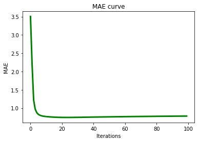
model = nmf_mult(train_list=train_list,
test_list=test_list,
N=N,
M=M,
K=K,
max_iteration=max_iteration)
P, Q, records_array = model.train()
print('MAE:%.4f;RMSE:%.4f;Recall:%.4f;Precision:%.4f'
%(records_array[:,1][-1],records_array[:,2][-1],records_array[:,3][-1],records_array[:,4][-1]))
step:0
loss:2580523.1425,mae:3.5267,rmse:5.8206,recall:0.0259,precision:0.0549
step:10
loss:2964883.3145,mae:3.8250,rmse:6.8355,recall:0.0232,precision:0.0491
step:20
loss:3519744.0259,mae:3.6206,rmse:6.1980,recall:0.0217,precision:0.0461
step:30
loss:2553275.7664,mae:3.5180,rmse:3.7344,recall:0.0274,precision:0.0582
step:40
loss:82457928.5335,mae:4.4230,rmse:21.7644,recall:0.0219,precision:0.0464
step:50
loss:49372155.9049,mae:4.8383,rmse:27.7464,recall:0.0331,precision:0.0703
step:60
loss:1783316.4779,mae:3.5159,rmse:4.8778,recall:0.0226,precision:0.0479
step:70
loss:1378775.2095,mae:3.4903,rmse:3.7809,recall:0.0312,precision:0.0662
step:80
loss:6013408.4926,mae:3.7754,rmse:7.0817,recall:0.0381,precision:0.0807
step:90
loss:1095681.3585,mae:3.4406,rmse:3.7484,recall:0.0146,precision:0.0310
end.
loss:9446218.6269,mae:3.5393,rmse:3.8621,recall:0.0215,precision:0.0457
MAE:3.5393;RMSE:3.8621;Recall:0.0215;Precision:0.0457
plot_figure(values_list=records_array[:,0],name='loss')
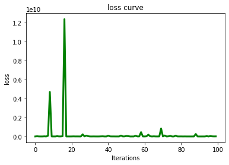
plot_figure(values_list=records_array[:,1],name='MAE')
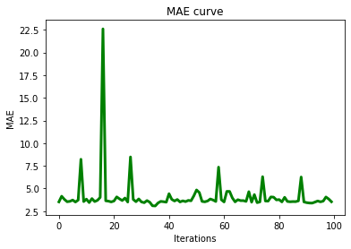
from sklearn.decomposition import NMF
model = NMF(n_components=10, init='random', random_state=0)
train_mat = sequence2mat(sequence = train_list, N = N, M = M)
W = model.fit_transform(train_mat)
H = model.components_
def prediction(P, Q):
N,K = P.shape
M,K = Q.shape
rating_list=[]
for u in range(N):
u_rating = np.sum(P[u,:]*Q, axis=1)
rating_list.append(u_rating)
r_pred = np.array(rating_list)
return r_pred
# 预测评分
user = np.array(train_list)[:,0].astype(np.int16)
item = np.array(train_list)[:,1].astype(np.int16)
rating_true = np.array(train_list)[:,2]
rating_pred = np.sum(W[user,:]*H.T[item,:],axis=1)
loss = np.sum((rating_true-rating_pred)**2)
pred_mat = prediction(W, H.T)
# 评估算法
mae, rmse, recall, precision = evaluation(pred_mat, train_mat, test_mat)
print(loss, mae, rmse, recall, precision)
517235.90674966876 2.368676919640145 2.6390209548615853 0.1556 0.33001060445387065
PMF¶

class pmf():
def __init__(self,
train_list, # train_list: train data
test_list, # test_list: test data
N, # N:the number of user
M, # M:the number of item
K=10, # K: the number of latent factor
learning_rate=0.001, # learning_rate: the learning rata
lamda_regularizer=0.1, # lamda_regularizer: regularization parameters
max_iteration=50 # max_iteration: the max iteration
):
self.train_list = train_list
self.test_list = test_list
self.N = N
self.M = M
self.K = K
self.learning_rate = learning_rate
self.lamda_regularizer = lamda_regularizer
self.max_iteration = max_iteration
def train(self):
P = np.random.normal(0, 0.1, (self.N, self.K))
Q = np.random.normal(0, 0.1, (self.M, self.K))
train_mat = sequence2mat(sequence = self.train_list, N = self.N, M = self.M)
test_mat = sequence2mat(sequence = self.test_list, N = self.N, M = self.M)
records_list = []
for step in range(self.max_iteration):
los=0.0
for data in self.train_list:
u,i,r = data
P[u],Q[i],ls = self.update(P[u], Q[i], r=r,
learning_rate=self.learning_rate,
lamda_regularizer=self.lamda_regularizer)
los += ls
pred_mat = self.prediction(P,Q)
mae, rmse, recall, precision = evaluation(pred_mat, train_mat, test_mat)
records_list.append(np.array([los, mae, rmse, recall, precision]))
if step % 10 ==0:
print(' step:%d \n loss:%.4f,mae:%.4f,rmse:%.4f,recall:%.4f,precision:%.4f'
%(step,los,mae,rmse,recall,precision))
print(' end. \n loss:%.4f,mae:%.4f,rmse:%.4f,recall:%.4f,precision:%.4f'
%(records_list[-1][0],records_list[-1][1],records_list[-1][2],records_list[-1][3],records_list[-1][4]))
return P, Q, np.array(records_list)
def update(self, p, q, r, learning_rate=0.001, lamda_regularizer=0.1):
error = r - np.dot(p, q.T)
p = p + learning_rate*(error*q - lamda_regularizer*p)
q = q + learning_rate*(error*p - lamda_regularizer*q)
loss = 0.5 * (error**2 + lamda_regularizer*(np.square(p).sum() + np.square(q).sum()))
return p, q, loss
def prediction(self, P, Q):
N,K = P.shape
M,K = Q.shape
rating_list=[]
for u in range(N):
u_rating = np.sum(P[u,:]*Q, axis=1)
rating_list.append(u_rating)
r_pred = np.array(rating_list)
return r_pred
model = pmf(train_list=train_list,
test_list=test_list,
N=N,
M=M,
K=K,
learning_rate=learning_rate,
lamda_regularizer=lamda_regularizer,
max_iteration=max_iteration)
P, Q, records_array = model.train()
print('MAE:%.4f;RMSE:%.4f;Recall:%.4f;Precision:%.4f'
%(records_array[:,1][-1],records_array[:,2][-1],records_array[:,3][-1],records_array[:,4][-1]))
step:0
loss:549485.5123,mae:3.5175,rmse:3.6925,recall:0.0155,precision:0.0328
step:10
loss:65455.1499,mae:0.7777,rmse:0.9897,recall:0.0347,precision:0.0735
step:20
loss:62521.8712,mae:0.7523,rmse:0.9537,recall:0.0367,precision:0.0778
step:30
loss:61353.0497,mae:0.7414,rmse:0.9388,recall:0.0382,precision:0.0810
step:40
loss:60595.2757,mae:0.7355,rmse:0.9307,recall:0.0381,precision:0.0807
step:50
loss:59977.5104,mae:0.7314,rmse:0.9253,recall:0.0366,precision:0.0776
step:60
loss:59462.0573,mae:0.7287,rmse:0.9219,recall:0.0331,precision:0.0703
step:70
loss:59048.4957,mae:0.7272,rmse:0.9200,recall:0.0295,precision:0.0627
step:80
loss:58729.0087,mae:0.7264,rmse:0.9191,recall:0.0273,precision:0.0579
step:90
loss:58486.3105,mae:0.7261,rmse:0.9189,recall:0.0251,precision:0.0532
end.
loss:58317.9659,mae:0.7261,rmse:0.9191,recall:0.0237,precision:0.0503
MAE:0.7261;RMSE:0.9191;Recall:0.0237;Precision:0.0503
plot_figure(values_list=records_array[:,0],name='loss')
plot_figure(values_list=records_array[:,1],name='MAE')
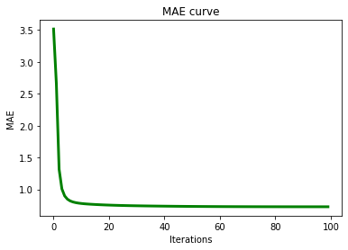
WMF¶
class wmf():
def __init__(self,
train_list, # train_list: train data
test_list, # test_list: test data
N, # N:the number of user
M, # M:the number of item
K=10, # K: the number of latent factor
alpha=40, # alpha: the confidence of negtive samplers
lamda_regularizer=0.1, # lamda_regularizer: regularization parameters
max_iteration=50 # max_iteration: the max iteration
):
self.train_list = train_list
self.test_list = test_list
self.N = N
self.M = M
self.K = K
self.alpha = alpha
self.lamda_regularizer = lamda_regularizer
self.max_iteration = max_iteration
def train(self):
P = np.random.normal(0, 0.1, (self.N, self.K))
Q = np.random.normal(0, 0.1, (self.M, self.K))
train_mat = sequence2mat(sequence = self.train_list, N = self.N, M = self.M)
test_mat = sequence2mat(sequence = self.test_list, N = self.N, M = self.M)
records_list = []
for step in range(self.max_iteration):
for u in range(self.N):
Ru = train_mat[u,:]
P[u,:] = self.update(Q, Ru, lamda_regularizer=self.lamda_regularizer, alpha=self.alpha)
for i in range(self.M):
Ri = train_mat[:,i]
Q[i,:] = self.update(P, Ri.T, lamda_regularizer=self.lamda_regularizer, alpha=self.alpha)
pred_mat = self.prediction(P, Q)
mae, rmse, recall, precision = evaluation(pred_mat, train_mat, test_mat)
records_list.append(np.array([mae, rmse, recall, precision]))
print(' step:%d \n mae:%.4f,rmse:%.4f,recall:%.4f,precision:%.4f'%(step,mae,rmse,recall,precision))
print(' end. \n mae:%.4f,rmse:%.4f,recall:%.4f,precision:%.4f'
%(records_list[-1][0],records_list[-1][1],records_list[-1][2],records_list[-1][3]))
return P, Q, np.array(records_list)
def update(self, P, Ru, lamda_regularizer=0.1, alpha=40):
# P: N/M *K
# Ru: N/M *1
N, K = P.shape
c_ui = 1 + alpha*Ru
Cu = c_ui* np.eye(N)
YtCY_I = P.T.dot(Cu).dot(P) + lamda_regularizer*np.eye(K)
YtCRu = P.T.dot(Cu).dot(Ru)
p = np.linalg.inv(YtCY_I).dot(YtCRu)
return p.T
def prediction(self, P, Q):
N,K = P.shape
M,K = Q.shape
rating_list=[]
for u in range(N):
u_rating = np.sum(P[u,:]*Q, axis=1)
rating_list.append(u_rating)
r_pred = np.array(rating_list)
return r_pred
max_iteration = 10
alpha=40
model = wmf(train_list=train_list,
test_list=test_list,
N=N,
M=M,
K=K,
alpha=alpha,
lamda_regularizer=lamda_regularizer,
max_iteration=max_iteration)
P, Q, records_array = model.train()
print('MAE:%.4f;RMSE:%.4f;Recall:%.4f;Precision:%.4f'
%(records_array[:,0][-1],records_array[:,1][-1],records_array[:,2][-1],records_array[:,3][-1]))
step:0
mae:2.2314,rmse:2.7460,recall:0.0182,precision:0.0386
step:1
mae:0.8536,rmse:1.1179,recall:0.0722,precision:0.1530
step:2
mae:0.8400,rmse:1.1036,recall:0.0751,precision:0.1593
step:3
mae:0.8361,rmse:1.1002,recall:0.0759,precision:0.1610
step:4
mae:0.8343,rmse:1.0983,recall:0.0775,precision:0.1644
step:5
mae:0.8329,rmse:1.0969,recall:0.0777,precision:0.1648
step:6
mae:0.8319,rmse:1.0959,recall:0.0776,precision:0.1646
step:7
mae:0.8313,rmse:1.0954,recall:0.0776,precision:0.1647
step:8
mae:0.8308,rmse:1.0953,recall:0.0786,precision:0.1667
step:9
mae:0.8303,rmse:1.0954,recall:0.0788,precision:0.1671
end.
mae:0.8303,rmse:1.0954,recall:0.0788,precision:0.1671
MAE:0.8303;RMSE:1.0954;Recall:0.0788;Precision:0.1671
plot_figure(values_list=records_array[:,2],name='Recall')
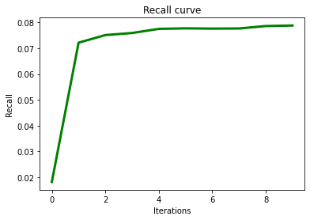
plot_figure(values_list=records_array[:,3],name='Precision')
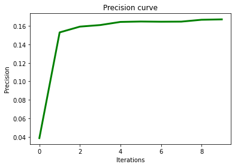
SVD¶

from sklearn.utils.extmath import randomized_svd
def puresvd(R = None, # train mat
k=150, # the number of latent factor
):
P, sigma, QT = randomized_svd(R, k)
sigma = scipy.sparse.diags(sigma, 0)
P = P * sigma
Q = QT.T
# R_= np.dot(P, QT)
R_ = np.dot(R, np.dot(Q, QT)) #
return R_
R_score = puresvd(R=train_mat, k=K)
mae, rmse, recall, precision = evaluation(pred_mat=R_score, train_mat=train_mat, test_mat=test_mat)
print('mae:%.4f,rmse:%.4f,recall:%.4f,precision:%.4f'%(mae,rmse,recall,precision))
BiasSVD¶
class biassvd():
def __init__(self,
train_list, # train_list: train data
test_list, # test_list: test data
N, # N:the number of user
M, # M:the number of item
K=10, # K: the number of latent factor
learning_rate=0.001, # learning_rate: the learning rata
lamda_regularizer=0.1, # lamda_regularizer: regularization parameters
max_iteration=50 # max_iteration: the max iteration
):
self.train_list = train_list
self.test_list = test_list
self.N = N
self.M = M
self.K = K
self.learning_rate = learning_rate
self.lamda_regularizer = lamda_regularizer
self.max_iteration = max_iteration
def train(self):
P = np.random.normal(0, 0.1, (self.N, self.K))
Q = np.random.normal(0, 0.1, (self.M, self.K))
bu = np.zeros([self.N])
bi = np.zeros([self.M])
train_mat = sequence2mat(sequence = self.train_list, N = self.N, M = self.M)
test_mat = sequence2mat(sequence = self.test_list, N = self.N, M = self.M)
aveg_rating = np.mean(train_mat[train_mat>0])
records_list = []
for step in range(self.max_iteration):
los=0.0
for data in self.train_list:
u,i,r = data
P[u],Q[i],bu[u],bi[i],ls = self.update(P[u], Q[i], bu=bu[u], bi=bi[i],
aveg_rating=aveg_rating, r=r,
learning_rate=self.learning_rate,
lamda_regularizer=self.lamda_regularizer)
los += ls
pred_mat = self.prediction(P, Q, bu, bi, aveg_rating)
mae, rmse, recall, precision = evaluation(pred_mat, train_mat, test_mat)
records_list.append(np.array([los, mae, rmse, recall, precision]))
if step % 10 ==0:
print(' step:%d \n loss:%.4f,mae:%.4f,rmse:%.4f,recall:%.4f,precision:%.4f'
%(step,los,mae,rmse,recall,precision))
print(' end. \n loss:%.4f,mae:%.4f,rmse:%.4f,recall:%.4f,precision:%.4f'
%(records_list[-1][0],records_list[-1][1],records_list[-1][2],records_list[-1][3],records_list[-1][4]))
return P, Q, bu, bi, np.array(records_list)
def prediction(self, P, Q, bu, bi, aveg_rating):
N,K = P.shape
M,K = Q.shape
rating_list=[]
for u in range(N):
u_rating = aveg_rating + bu[u] + bi + np.sum(P[u,:]*Q, axis=1)
rating_list.append(u_rating)
r_pred = np.array(rating_list)
return r_pred
def update(self, p, q, bu, bi, aveg_rating, r, learning_rate=0.001, lamda_regularizer=0.1):
error = r - (aveg_rating + bu + bi + np.dot(p, q.T))
p = p + learning_rate*(error*q - lamda_regularizer*p)
q = q + learning_rate*(error*p - lamda_regularizer*q)
bu = bu + learning_rate*(error - lamda_regularizer*bu)
bi = bi + learning_rate*(error - lamda_regularizer*bi)
loss = 0.5 * (error**2 + lamda_regularizer*(np.square(p).sum() + np.square(q).sum()) + bu**2 + bi**2)
return p, q, bu, bi, loss
max_iteration = 100
model = biassvd(train_list=train_list,
test_list=test_list,
N=N,
M=M,
K=K,
learning_rate=learning_rate,
lamda_regularizer=lamda_regularizer,
max_iteration=max_iteration)
P, Q, bu, bi, records_array = model.train()
print('MAE:%.4f;RMSE:%.4f;Recall:%.4f;Precision:%.4f'
%(records_array[:,1][-1],records_array[:,2][-1],records_array[:,3][-1],records_array[:,4][-1]))
step:0
loss:46872.3253,mae:0.8161,rmse:1.0085,recall:0.0638,precision:0.1353
step:10
loss:47453.6253,mae:0.7516,rmse:0.9502,recall:0.0358,precision:0.0759
step:20
loss:47772.9913,mae:0.7465,rmse:0.9452,recall:0.0295,precision:0.0626
step:30
loss:47453.6354,mae:0.7410,rmse:0.9391,recall:0.0304,precision:0.0645
step:40
loss:46753.5474,mae:0.7329,rmse:0.9298,recall:0.0302,precision:0.0641
step:50
loss:46051.6004,mae:0.7273,rmse:0.9228,recall:0.0323,precision:0.0686
step:60
loss:45389.8553,mae:0.7237,rmse:0.9184,recall:0.0321,precision:0.0682
step:70
loss:44785.6377,mae:0.7214,rmse:0.9157,recall:0.0299,precision:0.0634
step:80
loss:44272.4167,mae:0.7202,rmse:0.9143,recall:0.0278,precision:0.0590
step:90
loss:43856.1163,mae:0.7197,rmse:0.9137,recall:0.0256,precision:0.0543
end.
loss:43554.0978,mae:0.7196,rmse:0.9137,recall:0.0233,precision:0.0495
MAE:0.7196;RMSE:0.9137;Recall:0.0233;Precision:0.0495
plot_figure(values_list=records_array[:,0],name='loss')
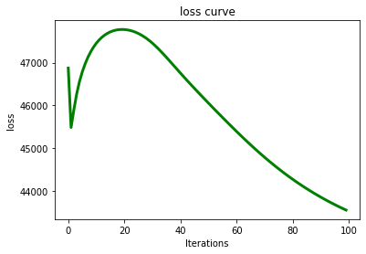
plot_figure(values_list=records_array[:,1],name='MAE')
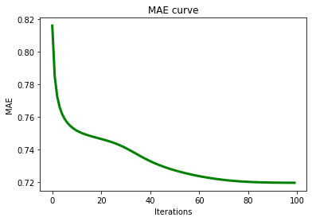
SVD++¶
class svdplus():
def __init__(self,
train_list, # train_list: train data
test_list, # test_list: test data
N, # N:the number of user
M, # M:the number of item
K=10, # K: the number of latent factor
learning_rate=0.001, # learning_rate: the learning rata
lamda_regularizer=0.1, # lamda_regularizer: regularization parameters
max_iteration=50 # max_iteration: the max iteration
):
self.train_list = train_list
self.test_list = test_list
self.N = N
self.M = M
self.K = K
self.learning_rate = learning_rate
self.lamda_regularizer = lamda_regularizer
self.max_iteration = max_iteration
def train(self):
P = np.random.normal(0, 0.1, (self.N, self.K))
Q = np.random.normal(0, 0.1, (self.M, self.K))
Y = np.random.normal(0, 0.1, (self.M, self.K))
bu = np.zeros([self.N])
bi = np.zeros([self.M])
train_mat = sequence2mat(sequence = self.train_list, N = self.N, M = self.M)
test_mat = sequence2mat(sequence = self.test_list, N = self.N, M = self.M)
aveg_rating = np.mean(train_mat[train_mat>0])
records_list = []
for step in range(self.max_iteration):
los=0.0
for data in self.train_list:
u,i,r = data
P[u],Q[i],bu[u],bi[i],Y, ls = self.update(p=P[u], q=Q[i], bu=bu[u], bi=bi[i], Y=Y,
aveg_rating=aveg_rating, r=r,Ru = train_mat[u],
learning_rate=self.learning_rate,
lamda_regularizer=self.lamda_regularizer)
los += ls
pred_mat = self.prediction(P, Q, Y, bu, bi, aveg_rating, train_mat)
mae, rmse, recall, precision = evaluation(pred_mat, train_mat, test_mat)
records_list.append(np.array([los, mae, rmse, recall, precision]))
if step % 10 ==0:
print(' step:%d \n loss:%.4f,mae:%.4f,rmse:%.4f,recall:%.4f,precision:%.4f'
%(step,los,mae,rmse,recall,precision))
print(' end. \n loss:%.4f,mae:%.4f,rmse:%.4f,recall:%.4f,precision:%.4f'
%(records_list[-1][0],records_list[-1][1],records_list[-1][2],records_list[-1][3],records_list[-1][4]))
return P, Q, Y, bu, bi, np.array(records_list)
def update(self, p, q, bu, bi, Y, aveg_rating, r, Ru, learning_rate=0.001, lamda_regularizer=0.1):
Iu = np.sum(Ru>0)
y_sum = np.sum(Y[np.where(Ru>0)], axis=0)
error = r - (aveg_rating + bu + bi + np.dot(p+Iu**(-0.5)*y_sum, q.T))
p = p + learning_rate*(error*q - lamda_regularizer*p)
q = q + learning_rate*(error*(p + Iu**(-0.5)*y_sum) - lamda_regularizer*q)
bu = bu + learning_rate*(error - lamda_regularizer*bu)
bi = bi + learning_rate*(error - lamda_regularizer*bi)
l = 0
for j in np.where(Ru>0):
Y[j] = Y[j] + learning_rate*(error*Iu**(-0.5)*q - lamda_regularizer*Y[j])
l = l + np.square(Y[j]).sum()
loss = 0.5 * (error**2 + lamda_regularizer*(np.square(p).sum() + np.square(q).sum()) + bu**2 + bi**2 + l)
return p, q, bu, bi, Y, loss
def prediction(self, P, Q, Y, bu, bi, aveg_rating, R):
N,K = P.shape
M,K = Q.shape
rating_list=[]
for u in range(N):
Ru = R[u]
Iu = np.sum(Ru>0)
y_sum = np.sum(Y[np.where(Ru>0)],axis=0)
u_rating = aveg_rating + bu[u]+ bi + np.sum((P[u,:]+Iu**(-0.5)*y_sum)*Q,axis=1)
rating_list.append(u_rating)
r_pred = np.array(rating_list)
return r_pred
model = svdplus(train_list=train_list,
test_list=test_list,
N=N,
M=M,
K=K,
learning_rate=learning_rate,
lamda_regularizer=lamda_regularizer,
max_iteration=max_iteration)
P, Q, Y, bu, bi, records_array = model.train()
print('MAE:%.4f;RMSE:%.4f;Recall:%.4f;Precision:%.4f'
%(records_array[:,1][-1],records_array[:,2][-1],records_array[:,3][-1],records_array[:,4][-1]))
plot_figure(values_list=records_array[:,0],name='loss')
plot_figure(values_list=records_array[:,1],name='MAE')
MLP¶

class mlp():
def __init__(self,
users_num = None,
items_num = None,
embedding_size = 16,
hidden_sizes = [16,8],
learning_rate = 1e-3,
lamda_regularizer=1e-3,
batch_size = 256
):
self.users_num = users_num
self.items_num = items_num
self.embedding_size = embedding_size
self.hidden_sizes = hidden_sizes
self.learning_rate = learning_rate
self.lamda_regularizer = lamda_regularizer
self.batch_size = batch_size
# loss records
self.train_loss_records = []
self.build_graph()
def build_graph(self):
self.graph = tf.Graph()
with self.graph.as_default():
# _________ input data _________
self.users_inputs = tf.compat.v1.placeholder(tf.int32, shape = [None], name='users_inputs')
self.items_inputs = tf.compat.v1.placeholder(tf.int32, shape = [None], name='items_inputs')
self.train_labels = tf.compat.v1.placeholder(tf.float32, shape = [None], name='train_labels')
# _________ variables _________
self.weights = self._initialize_weights()
# _________ train _____________
self.y_ = self.inference(users_inputs=self.users_inputs, items_inputs=self.items_inputs)
self.loss_train = self.loss_function(true_labels=self.train_labels,
predicted_labels=tf.reshape(self.y_,shape=[-1]),
lamda_regularizer=self.lamda_regularizer)
self.train_op = tf.compat.v1.train.AdamOptimizer(learning_rate=self.learning_rate,beta1=0.9, beta2=0.999, epsilon=1e-08).minimize(self.loss_train)
# _________ prediction _____________
self.predictions = self.inference(users_inputs=self.users_inputs, items_inputs=self.items_inputs)
#变量初始化 init
init = tf.compat.v1.global_variables_initializer()
self.sess = self._init_session()
self.sess.run(init)
def _init_session(self):
# adaptively growing memory
config = tf.compat.v1.ConfigProto()
config.gpu_options.allow_growth = True
return tf.compat.v1.Session(config=config)
def _initialize_weights(self):
all_weights = dict()
# -----embedding layer------
all_weights['embedding_users'] = tf.Variable(tf.random.normal([self.users_num, self.embedding_size],0, 0.1),name='embedding_users')
all_weights['embedding_items'] = tf.Variable(tf.random.normal([self.items_num, self.embedding_size],
0, 0.1),name='embedding_items')
# ------hidden layer------
all_weights['weight_0'] = tf.Variable(tf.random.normal([self.embedding_size * 2,self.hidden_sizes[0]], 0.0, 0.1),name='weight_0')
all_weights['bias_0'] = tf.Variable(tf.zeros([self.hidden_sizes[0]]), name='bias_0')
all_weights['weight_1'] = tf.Variable(tf.random.normal([self.hidden_sizes[0],self.hidden_sizes[1]], 0.0, 0.1), name='weight_1')
all_weights['bias_1'] = tf.Variable(tf.zeros([self.hidden_sizes[1]]), name='bias_1')
# ------output layer-----
all_weights['weight_n'] = tf.Variable(tf.random.normal([self.hidden_sizes[-1], 1], 0, 0.1), name='weight_n')
all_weights['bias_n'] = tf.Variable(tf.zeros([1]), name='bias_n')
return all_weights
def train(self, data_sequence):
train_size = len(data_sequence)
batch_size = self.batch_size
total_batch = math.ceil(train_size/batch_size)
for batch in range(total_batch):
start = (batch*batch_size)% train_size
end = min(start+batch_size, train_size)
data_array = np.array(data_sequence[start:end])
X = data_array[:,:2] # u,i
y = data_array[:,-1] # label
feed_dict = {self.users_inputs: X[:,0], self.items_inputs: X[:,1], self.train_labels:y}
loss, opt = self.sess.run([self.loss_train,self.train_op], feed_dict=feed_dict)
self.train_loss_records.append(loss)
return self.train_loss_records
def inference(self, users_inputs, items_inputs):
embed_users = tf.reshape(tf.nn.embedding_lookup(self.weights['embedding_users'], users_inputs),
shape=[-1, self.embedding_size])
embed_items = tf.reshape(tf.nn.embedding_lookup(self.weights['embedding_items'], items_inputs),
shape=[-1, self.embedding_size])
layer0 = tf.nn.relu(tf.matmul(tf.concat([embed_items,embed_users],1), self.weights['weight_0']) + self.weights['bias_0'])
layer1 = tf.nn.relu(tf.matmul(layer0, self.weights['weight_1']) + self.weights['bias_1'])
y_ = tf.matmul(layer1,self.weights['weight_n']) + self.weights['bias_n']
return y_
def loss_function(self, true_labels, predicted_labels,lamda_regularizer=1e-3):
loss = tf.compat.v1.losses.mean_squared_error(true_labels, predicted_labels)
cost = loss
if lamda_regularizer>0:
regularizer_1 = tf.contrib.layers.l2_regularizer(lamda_regularizer)
regularization = regularizer_1(
self.weights['embedding_users']) + regularizer_1(
self.weights['embedding_items'])+ regularizer_1(
self.weights['weight_0']) + regularizer_1(
self.weights['weight_1']) + regularizer_1(
self.weights['weight_n'])
cost = loss + regularization
return cost
def predict_ratings(self, data_sequence):
pred_mat = np.zeros([self.users_num, self.items_num])
instances_size = len(data_sequence)
data_array = np.array(data_sequence)
items_id = np.array([i for i in range(self.items_num)])
for u in range(self.users_num):
users_id = u*np.ones_like(items_id)
feed_dict = {self.users_inputs:users_id,
self.items_inputs:items_id}
out = self.sess.run([self.predictions], feed_dict=feed_dict)
pred_mat[u] = np.reshape(out,(-1))
return pred_mat
users_num = N
items_num = M
hidden_size = 500
batch_size = 256
lamda_regularizer = 1e-3
learning_rate = 1e-4
epoches = 100
embedding_size = 8
learning_rate = 1e-4
hidden_sizes = [embedding_size,int(embedding_size/2)]
model = mlp(users_num = users_num,
items_num = items_num,
embedding_size = embedding_size,
hidden_sizes = hidden_sizes,
learning_rate = learning_rate,
lamda_regularizer = lamda_regularizer,
batch_size = batch_size)
records_list = []
input_data = train_list
for epoch in range(epoches):
data_mat = np.random.permutation(input_data)
loss = model.train(data_sequence=data_mat)
pred_mat = model.predict_ratings(data_sequence=test_list)
mae, rmse, recall, precision = evaluation(pred_mat, train_mat, test_mat)
records_list.append([loss[-1],mae, rmse, recall, precision])
if epoch % 10==0:
topn = get_topn(pred_mat, train_mat, n=10)
hit_list, ndcg_list = hit_ndcg(test_sequence=np.array(test_list), ranklist=topn)
hit, ndcg = np.array(hit_list).mean(),np.array(ndcg_list).mean()
print('epoch:%d loss=%.4f; \n MAE=%.4f; RMSE=%.4f; Recall=%.4f; Precision=%.4f; Hit=%.4f; NDCG=%.4f'
%(epoch, loss[-1], mae, rmse, recall, precision, hit, ndcg))
epoch:0 loss=14.1272;
MAE=3.4707; RMSE=3.6485; Recall=0.0110; Precision=0.0233; Hit=0.0110; NDCG=0.0049
epoch:10 loss=0.9330;
MAE=0.8052; RMSE=1.0114; Recall=0.0621; Precision=0.1317; Hit=0.0621; NDCG=0.0305
epoch:20 loss=1.1057;
MAE=0.7549; RMSE=0.9589; Recall=0.0452; Precision=0.0959; Hit=0.0452; NDCG=0.0189
epoch:30 loss=1.0902;
MAE=0.7459; RMSE=0.9493; Recall=0.0403; Precision=0.0856; Hit=0.0403; NDCG=0.0165
epoch:40 loss=1.0826;
MAE=0.7434; RMSE=0.9463; Recall=0.0376; Precision=0.0796; Hit=0.0376; NDCG=0.0154
epoch:50 loss=0.9546;
MAE=0.7424; RMSE=0.9454; Recall=0.0367; Precision=0.0777; Hit=0.0367; NDCG=0.0152
epoch:60 loss=1.1408;
MAE=0.7416; RMSE=0.9450; Recall=0.0360; Precision=0.0764; Hit=0.0360; NDCG=0.0147
epoch:70 loss=0.7712;
MAE=0.7419; RMSE=0.9446; Recall=0.0323; Precision=0.0685; Hit=0.0323; NDCG=0.0136
epoch:80 loss=0.9435;
MAE=0.7416; RMSE=0.9446; Recall=0.0323; Precision=0.0684; Hit=0.0323; NDCG=0.0135
epoch:90 loss=0.7107;
MAE=0.7416; RMSE=0.9445; Recall=0.0309; Precision=0.0655; Hit=0.0309; NDCG=0.0131
plot_figure(values_list=np.array(records_list)[:,0],name='loss')
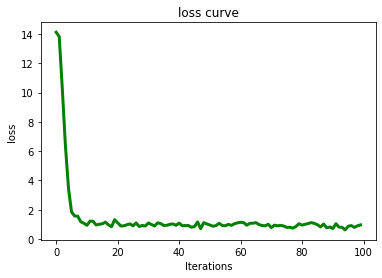
plot_figure(values_list=np.array(records_list)[:,2],name='RMSE')
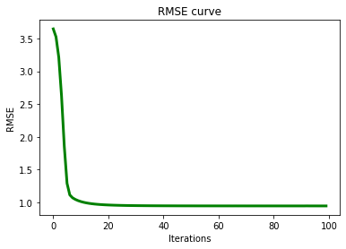
plot_figure(values_list=np.array(records_list)[:,-1],name='Precision')
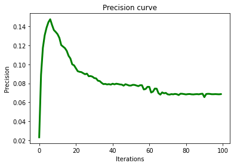
AutoRec¶

class autorec():
def __init__(self,
users_num = None, #用户数
items_num = None, #商品数
hidden_size = 500, #隐层节点数目，即用户的嵌入空间维度
batch_size = 256, #batch大小
learning_rate = 1e-3, #学习率
lamda_regularizer = 1e-3, #正则项系数
):
self.users_num = users_num
self.items_num = items_num
self.hidden_size = hidden_size
self.batch_size = batch_size
self.learning_rate = learning_rate
self.lamda_regularizer = lamda_regularizer
self.train_loss_records = []
self.build_graph()
def build_graph(self):
self.graph = tf.Graph()
with self.graph.as_default():
# _________ input data _________
self.rating_inputs = tf.compat.v1.placeholder(tf.float32, shape = [None, self.items_num], name='rating_inputs')
# _________ variables _________
self.weights = self._initialize_weights()
# _________ train _____________
self.y_ = self.inference(rating_inputs=self.rating_inputs)
self.loss_train = self.loss_function(true_r=self.rating_inputs, predicted_r=self.y_, lamda_regularizer=self.lamda_regularizer)
self.train_op = tf.compat.v1.train.AdamOptimizer(learning_rate=self.learning_rate, beta1=0.9, beta2=0.999, epsilon=1e-08).minimize(self.loss_train)
# _________ prediction _____________
self.predictions = self.inference(rating_inputs=self.rating_inputs)
#变量初始化 init
init = tf.compat.v1.global_variables_initializer()
self.sess = self._init_session()
self.sess.run(init)
def _init_session(self):
# adaptively growing memory
config = tf.compat.v1.ConfigProto()
config.gpu_options.allow_growth = True
return tf.compat.v1.Session(config=config)
def _initialize_weights(self):
all_weights = dict()
all_weights['V'] = tf.Variable(tf.random.normal([self.items_num, self.hidden_size], 0.0, 0.1), name='V')
all_weights['mu'] = tf.Variable(tf.zeros([self.hidden_size]), name='mu')
all_weights['W'] = tf.Variable(tf.random.normal([self.hidden_size, self.items_num], 0.0, 0.1), name='W')
all_weights['b'] = tf.Variable(tf.zeros([self.items_num]), name='b')
return all_weights
def train(self, data_mat):
instances_size = len(data_mat)
batch_size = self.batch_size
total_batch = math.ceil(instances_size/batch_size)
for batch in range(total_batch):
start = (batch*batch_size)% instances_size
end = min(start+batch_size, instances_size)
feed_dict = {self.rating_inputs: data_mat[start:end]}
loss, opt = self.sess.run([self.loss_train, self.train_op], feed_dict=feed_dict)
self.train_loss_records.append(loss)
return self.train_loss_records
# 网络的前向传播
def inference(self, rating_inputs):
encoder = tf.nn.sigmoid(tf.matmul(rating_inputs, self.weights['V']) + self.weights['mu'])
decoder = tf.identity(tf.matmul(encoder, self.weights['W']) + self.weights['b'])
return decoder
def loss_function(self, true_r, predicted_r, lamda_regularizer=1e-3):
idx = tf.where(true_r>0)
true_y = tf.gather_nd(true_r, idx)
predicted_y = tf.gather_nd(predicted_r, idx)
mse = tf.compat.v1.losses.mean_squared_error(true_y, predicted_y)
regularizer = tf.contrib.layers.l2_regularizer(lamda_regularizer)
regularization = regularizer(self.weights['V']) + regularizer(self.weights['W'])
cost = mse + regularization
return cost
def predict_ratings(self, data_mat):
pred_mat = np.zeros([self.users_num, self.items_num])
instances_size = len(data_mat)
batch_size = self.batch_size
total_batch = math.ceil(instances_size/batch_size)
for batch in range(total_batch):
start = (batch*batch_size)% instances_size
end = min(start+batch_size, instances_size)
feed_dict = {self.rating_inputs: data_mat[start:end]}
out = self.sess.run([self.predictions], feed_dict=feed_dict)
pred_mat[start:end,:] = np.reshape(out,(-1,self.items_num))
return pred_mat
users_num = N
items_num = M
hidden_size = 500
batch_size = 256
lamda_regularizer = 1e-3
learning_rate = 1e-3
epoches = 100
embedding_size = 8
model = autorec(users_num = users_num,
items_num = items_num,
hidden_size = hidden_size,
batch_size = batch_size,
learning_rate = learning_rate,
lamda_regularizer = lamda_regularizer)
records_list = []
for epoch in range(epoches):
data_mat = np.random.permutation(train_mat)
loss = model.train(data_mat=data_mat)
pred_mat = model.predict_ratings(data_mat=train_mat)
mae, rmse, recall, precision = evaluation(pred_mat, train_mat, test_mat)
records_list.append([loss[-1],mae, rmse, recall, precision])
if epoch % 10==0:
print('epoch:%d loss=%.4f; \n MAE=%.4f; RMSE=%.4f; Recall=%.4f; Precision=%.4f'
%(epoch, loss[-1], mae, rmse, recall, precision))
epoch:0 loss=24.2964;
MAE=3.5297; RMSE=3.9273; Recall=0.0103; Precision=0.0217
epoch:10 loss=16.9620;
MAE=2.5527; RMSE=2.9667; Recall=0.0167; Precision=0.0354
epoch:20 loss=12.6437;
MAE=1.7899; RMSE=2.1856; Recall=0.0200; Precision=0.0424
epoch:30 loss=10.4896;
MAE=1.3248; RMSE=1.6534; Recall=0.0243; Precision=0.0514
epoch:40 loss=9.4038;
MAE=1.1130; RMSE=1.3923; Recall=0.0246; Precision=0.0522
epoch:50 loss=8.9156;
MAE=1.0301; RMSE=1.2882; Recall=0.0238; Precision=0.0504
epoch:60 loss=8.6506;
MAE=0.9955; RMSE=1.2448; Recall=0.0243; Precision=0.0514
epoch:70 loss=8.3318;
MAE=0.9777; RMSE=1.2228; Recall=0.0240; Precision=0.0509
epoch:80 loss=8.1872;
MAE=0.9658; RMSE=1.2083; Recall=0.0240; Precision=0.0510
epoch:90 loss=7.8398;
MAE=0.9569; RMSE=1.1974; Recall=0.0237; Precision=0.0503
plot_figure(values_list=np.array(records_list)[:,0],name='loss')
plot_figure(values_list=np.array(records_list)[:,2],name='RMSE')
plot_figure(values_list=np.array(records_list)[:,-1],name='Precision')
CDAE¶

class cdae():
def __init__(self,
users_num = None, #用户数
items_num = None, #商品数
hidden_size = 500, #隐层节点数目，即用户的嵌入空间维度
batch_size = 256, #batch大小
learning_rate = 1e-3, #学习率
lamda_regularizer = 1e-3, #正则项系数
dropout_rate = 0.5, # dropout rate
noise_level = 1e-3
):
self.users_num = users_num
self.items_num = items_num
self.hidden_size = hidden_size
self.batch_size = batch_size
self.learning_rate = learning_rate
self.lamda_regularizer = lamda_regularizer
self.dropout_rate = dropout_rate
self.noise_level = noise_level
self.train_loss_records = []
self.build_graph()
def build_graph(self):
self.graph = tf.Graph()
with self.graph.as_default():
# _________ input data _________
self.rating_inputs = tf.compat.v1.placeholder(tf.float32, shape = [None, self.items_num], name='rating_inputs')
self.user_inputs = tf.compat.v1.placeholder(tf.int32, shape = [None, 1], name='user_inputs')
self.dropout_prob = tf.compat.v1.placeholder(tf.float32, name = "dropout_prob")
# _________ variables _________
self.weights = self._initialize_weights()
# _________ train _____________
self.y_ = self.inference(rating_inputs=self.rating_inputs, user_inputs=self.user_inputs)
self.loss_train = self.loss_function(true_r=self.corrupted_inputs, predicted_r=self.y_, lamda_regularizer=self.lamda_regularizer)
self.train_op = tf.compat.v1.train.AdamOptimizer(learning_rate=self.learning_rate, beta1=0.9, beta2=0.999, epsilon=1e-08).minimize(self.loss_train)
# _________ prediction _____________
self.predictions = self.inference(rating_inputs=self.rating_inputs, user_inputs=self.user_inputs)
#变量初始化 init
init = tf.compat.v1.global_variables_initializer()
self.sess = self._init_session()
self.sess.run(init)
def _init_session(self):
# adaptively growing memory
config = tf.compat.v1.ConfigProto()
config.gpu_options.allow_growth = True
return tf.compat.v1.Session(config=config)
def _initialize_weights(self):
all_weights = dict()
all_weights['W1'] = tf.Variable(tf.random.normal([self.items_num, self.hidden_size], 0.0, 0.1), name='W1')
all_weights['b1'] = tf.Variable(tf.zeros([self.hidden_size]), name='b1')
all_weights['W2'] = tf.Variable(tf.random.normal([self.hidden_size, self.items_num], 0.0, 0.1), name='W2')
all_weights['b2'] = tf.Variable(tf.zeros([self.items_num]), name='b2')
all_weights['V'] = tf.Variable(tf.zeros([self.users_num, self.hidden_size]), name='V')
return all_weights
def train(self, data_mat):
instances_size = len(data_mat)
batch_size = self.batch_size
total_batch = math.ceil(instances_size/batch_size)
for batch in range(total_batch):
start = (batch*batch_size)% instances_size
end = min(start+batch_size, instances_size)
feed_dict = {self.user_inputs:np.reshape(data_mat[start:end,0],(-1,1)),
self.rating_inputs:data_mat[start:end,1:],
self.dropout_prob:self.dropout_rate}
loss, opt = self.sess.run([self.loss_train, self.train_op], feed_dict=feed_dict)
self.train_loss_records.append(loss)
return self.train_loss_records
# 网络的前向传播
def inference(self, rating_inputs, user_inputs):
inputs_noisy = rating_inputs + self.noise_level * tf.random_normal(tf.shape(rating_inputs))
self.corrupted_inputs = tf.nn.dropout(inputs_noisy, rate=self.dropout_prob)
Vu = tf.reshape(tf.nn.embedding_lookup(self.weights['V'], user_inputs),(-1, self.hidden_size))
encoder = tf.nn.sigmoid(tf.matmul(self.corrupted_inputs, self.weights['W1']) + Vu + self.weights['b1'])
decoder = tf.identity(tf.matmul(encoder, self.weights['W2']) + self.weights['b2'])
return decoder
def loss_function(self, true_r, predicted_r, lamda_regularizer=1e-3, loss_type='square'):
idx = tf.where(true_r>0)
true_y = tf.gather_nd(true_r, idx)
predicted_y = tf.gather_nd(predicted_r, idx)
if loss_type=='square':
loss = tf.compat.v1.losses.mean_squared_error(true_y, predicted_y)
elif loss_type=='cross_entropy':
loss = tf.nn.sigmoid_cross_entropy_with_logits(labels=true_y, logits=predicted_y)
regularizer = tf.contrib.layers.l2_regularizer(lamda_regularizer)
regularization = regularizer(self.weights['V']) + regularizer(self.weights['W1']) + regularizer(
self.weights['W2']) + regularizer(self.weights['b1']) + regularizer(self.weights['b2'])
cost = loss + regularization
return cost
def predict_ratings(self, data_mat):
pred_mat = np.zeros([self.users_num, self.items_num])
instances_size = len(data_mat)
batch_size = self.batch_size
total_batch = math.ceil(instances_size/batch_size)
for batch in range(total_batch):
start = (batch*batch_size)% instances_size
end = min(start+batch_size, instances_size)
feed_dict = {self.user_inputs:np.reshape(data_mat[start:end,0],(-1,1)),
self.rating_inputs:data_mat[start:end,1:],
self.dropout_prob:0.}
out = self.sess.run([self.predictions], feed_dict=feed_dict)
pred_mat[start:end,:] = np.reshape(out,(-1,self.items_num))
return pred_mat
users_num = N
items_num = M
hidden_size = 50
batch_size = 256
lamda_regularizer = 1e-2
learning_rate = 0.01
epoches = 100
embedding_size = 8
hidden_size = 50
dropout_rate = 0.5
model = cdae(users_num = users_num,
items_num = items_num,
hidden_size = hidden_size,
batch_size = batch_size,
learning_rate = learning_rate,
lamda_regularizer = lamda_regularizer,
dropout_rate = dropout_rate)
user_array = np.array([u for u in range(users_num)])
input_data = np.c_[user_array, train_mat]
records_list = []
for epoch in range(epoches):
data_mat = np.random.permutation(input_data)
loss = model.train(data_mat=data_mat)
pred_mat = model.predict_ratings(data_mat=np.c_[user_array, train_mat])
mae, rmse, recall, precision = evaluation(pred_mat, train_mat, test_mat)
records_list.append([loss[-1],mae, rmse, recall, precision])
if epoch % 10==0:
print('epoch:%d loss=%.4f; \n MAE=%.4f; RMSE=%.4f; Recall=%.4f; Precision=%.4f'
%(epoch, loss[-1], mae, rmse, recall, precision))
epoch:0 loss=10.3755;
MAE=2.8404; RMSE=3.0550; Recall=0.0570; Precision=0.1208
epoch:10 loss=4.4843;
MAE=1.9206; RMSE=2.2486; Recall=0.1089; Precision=0.2309
epoch:20 loss=3.7899;
MAE=1.9118; RMSE=2.2383; Recall=0.1076; Precision=0.2282
epoch:30 loss=4.1955;
MAE=1.9184; RMSE=2.2458; Recall=0.1118; Precision=0.2370
epoch:40 loss=4.1775;
MAE=1.9164; RMSE=2.2450; Recall=0.1080; Precision=0.2291
epoch:50 loss=3.7932;
MAE=1.9130; RMSE=2.2392; Recall=0.1067; Precision=0.2263
epoch:60 loss=3.8836;
MAE=1.9184; RMSE=2.2473; Recall=0.1114; Precision=0.2362
epoch:70 loss=4.1528;
MAE=1.9213; RMSE=2.2488; Recall=0.1026; Precision=0.2176
epoch:80 loss=4.0620;
MAE=1.9569; RMSE=2.2818; Recall=0.1072; Precision=0.2274
epoch:90 loss=4.4991;
MAE=1.9058; RMSE=2.2374; Recall=0.1050; Precision=0.2227
plot_figure(values_list=np.array(records_list)[:,0],name='loss')
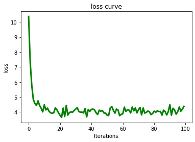
plot_figure(values_list=np.array(records_list)[:,2],name='RMSE')
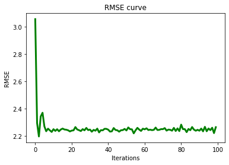
plot_figure(values_list=np.array(records_list)[:,-1],name='Precision')
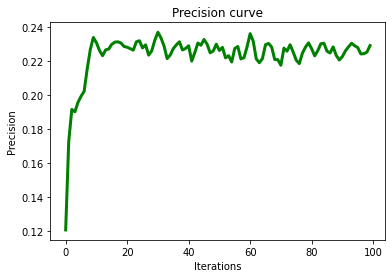